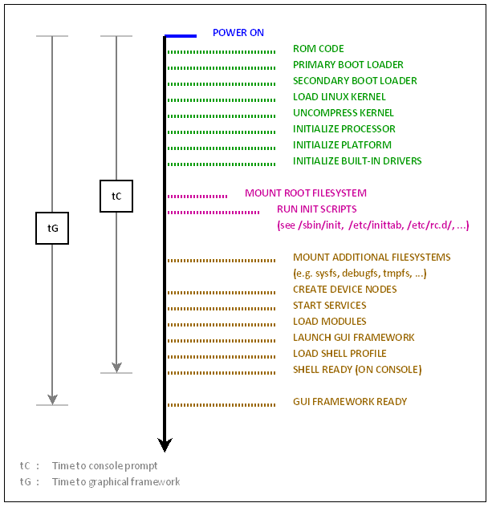
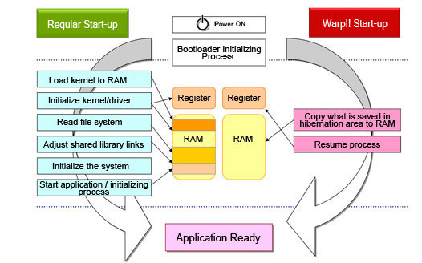
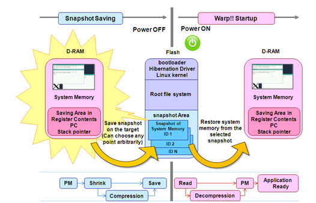

嵌入式产品的启动时间一般是一个指标，像大部分Android手机几乎没有为启动加速做过优化，可以改进的地方非常多。当然因为Android用得最多的地方是手机，难得冷启动一次。
用户从按下电源键开始，看到boot logo/boot splash到出现可操作的Home/App画面，需要的时间越少，自然越好，产品的竞争力也越强。
一般没有系统的嵌入式设备启动都是上电即进入正常工作流程，这里只说linux/Android及类似的系统；下面将会简单的说明和列举从启动流程到各个启动过程都可以使用的方法，以及快速启动。
☞启动流程
要做启动时间优化，需要对启动过程非常熟悉。下面从启动流程说起。
不同的嵌入式设备启动流程很可能不一样，但是绝大部分的linux/Android设备都是一样或者类似的。 
❤图片来源于：http://processors.wiki.ti.com/index.php/Optimize_Linux_Boot_Time
☞工具准备：
串口行间数据计时工具Grabserial的安装与使用
因为依赖python的serial模块，先安装它，在Ubuntu中安装python-serial：
sudo apt-get install python-serial
获取工具脚本：
wget http://makelinux.com/emb/grabserial
添加可执行权限：
chmod +x ./grabserial
设置以U-boot字符串出现为基准计时的使用示例：
sudo ./grabserial -v -d "/dev/ttyUSB0" -b 115200 -w 8 -p N -s 1 -e 30 -t -m "U-Boot"
如果要同一行内部计时，例如解压kernel的时候是在一行内的，可以使用-i选项：
$ ../grabserial -v -d /dev/ttyUSB1 -e 30 -t -m "Uncompressing Linux" -i "done,"
我们从MMC出现时开始计时，以下为实例log，其中第一列为从出现指定字符串开始的计时，第二列为与上一行log的间隔：
$sudo ./grabserial -v -d "/dev/ttyUSB0" -b 115200 -w 8 -p N -s 1 -e 30 -t -m "MMC:"
Opening serial port /dev/ttyUSB0
115200:8N1:xonxoff=0:rtcdtc=0
Program will end in 30 seconds
Printing timing information for each line
Matching pattern 'U-Boot' to set base time
Use Control-C to stop...
0.00 0 [ 0.000] Board: i.MX6Q: unknown-board Board: 0x63012 [POR ]
2.30 0 [ 0.008] Boot Device: SPI NOR
2.30 0 [ 0.012] I2C: ready
2.31 0 [ 0.022] MMC: FSL_USDHC: 0,FSL_USDHC: 1,FSL_USDHC: 2,FSL_USDHC: 3
2.40 8 [ 0.148] JEDEC ID: 0xc2:0x20:0x18
2.41 0 [ 0.152] 16384 KiB M25P32 - 16MB at 0:1 is now current device
2.41 0 [ 0.160] Using default environment
2.42 0
2.42 0 [ 0.165] In: serial
2.42 0 [ 0.168] Out: serial
2.42 0 [ 0.171] Err: serial
2.42 0 [ 0.175] Net:
尽管时间测量工具有很多当都各有各的缺点，例如这个工具就无法输入，同时在kernel、uboot分别可以设置printk.time=1、 CONFIG_SHOW_BOOT_PROGRESS来打印时间，但是这样打印时间有几个缺点：
- 占用target的资源导致打印时间不准确
- 如果在uboot之前还有引导程序将无法打印
- 无法对行内计时，例如无法测量kernel解压时间
Uncompressing Linux... done
准备好工具，下面将按照启动流程的各个步骤来说明可以如何提高启动速度。
☞Primary Bootloader
几乎绝大部分嵌入式SoC，在上电启动后(执行ROM Code阶段)，都会按照下面的两个方式的其中一种运行：
- 直接到某个拥有类内存接口的存储器(例如NOR-Flash)中开始执行（XIP）
- 从Nand/SD/SPI-NorFlash等不可XIP存储设备中拷贝指定大小的内容到内部RAM中，然后在内部RAM中开始执行
在许多嵌入式系统中很可能没有这个preboot（primary bootloader）的阶段（preboot我是这么叫的），或者说没有明显的primary bootloader（只编译和烧写一个bootloader文件），但是很可能在，直接就到了下面的Secondary bootloader阶段，但是不管如何
尽可能只做必须要做的事情，例如只做必须的设备的初始化
☞Secondary Bootloader
这一阶段bootloader也可以认为是Secondary bootloader或者是bootloader自身的第二阶段，例如uboot中的自拷贝relocate，一般按照顺序完成
初始化必须的外设，例如
这一个阶段，可以考虑以下方面来提速：
◕对于Cortex-A8/A9/A15使用armv7-a而不是默认的armv5来编译
◕避免在primary bootloader中初始化过的设备再一次初始化
◕去掉不需要的功能，例如：
- loadb
- bdinfo
- 不需要的外设初始化，例如网络设备
◕去掉遍历搜索查询，例如如果只用到一个MMC/MTD设备，那么没有必要去遍历所有的控制器
◕是否需要relocate
◕用普通的存储替换hash表存储environment
◕根据需要决定是否去掉uImage或者uramdisk的检验
◕如果第一阶段的uramdisk很小，可以考虑直接built-in到kernel中
◕如果开发精力足够，那么考虑使用其他为启动优化过的bootloader替换常规的uboot
☞kernel
uboot在启动到bootm后，会加载kernel到内存中并检验解压，然后跳入到kernel中。kernel会初始化Memory、外设等，并输出log，最后是mount rootfs，最后再跳入执行用户态的init（不同的文件系统执行的第一个程序会稍有不同，也可以在CMDLINE或者boot传入的args用init=XXX指定）程序。
因此上面对kernel的被加载和启动的描述，想加速就需要考虑下面几个方面：
- kernel size
- 外设等的初始化
- 各个功能的初始化
- log输出
- 文件系统
◕根据实际测量确定是否压缩kernel，以及选择压缩方式。
◕去掉不需要的Debug和Trace选项，例如：
- Kernel hacking里面的选择，例如Trace、KGDB
- Kernel debug
- 文件系统和driver的debug
◕去除功能和输出冗余项，例如：
- 不需要的外设和支持：
- 不需要的文件系统
- 去掉产生/proc/config.gz
- 减少不需要的输出，去掉verbose输出。
- 去掉能够的的Test代码编译支持
☞文件系统挂载和Userspace
在执行第一个用户程序（user space程序）时，一般会继续挂着需要的其他文件系统，加载被延后的模块，启动一些Service。例如Android的init就会根据init.MACHINE.rc去执行各个任务，例如启动bootani服务，启动vold服务，加载驱动模块XXX.ko，启动Deamon等。其他基于busybox的很可能会去执行runlevel下的脚本和Deamon/Service。
在这一阶段，我们需要做的是尽可能的让用户到达可操作状态，例如例如出现锁屏界面，或者指定应用程序。
在这一阶段，因为init进程是同步的，Android的init.MACHINE.rc里面的insmod也是同步的，因此可以采取的部分方法有：
- service和insmod的处理（可以更改init进制来从同步改成异步）
- 尽早尽可能的并行化
- 根据需要更改启动顺序，例如Android的bootani启动动画的可以放到后面，而不是作为第一个启动的service
☞Application
当kernel启动，各个必须的service/Deamon都启动后，需要的就是启动应用程序，让用户尽快的可以操作。这方面的改进可以看参考资料。
☞通用方法
- 在编译的时候对size进行优化，去掉编译
-g选项。 - 去掉log输出，在kernel可以添加
quit到Command line中。
☞均衡考虑
- 1.Kernel驱动模块化还是built-in？ built-in不仅仅增加kernel的大小，对于kernel存储在慢设备的情况下，影响较大，且初始化会占用时间。
- 2.存储介质的选择
- 3.初始化的时序？这个设备/功能真的需要在一开始就初始化吗？如果不需要，那么可以在使用时在初始化吗？
以上都是从正常启动流程来说明各个阶段可以用来提高启动速度的方法，除此外，还有一种快速启动的方法来提高启动速度--快速启动。
☞快速启动snapshot方案
许多SoC公司和solution公司都提供快速启动snapshot方案；快速启动和正常启动有着不一样的启动流程，一般省略了一些步骤。快速启动snapshot如同起名所描述的一样，在系统正常使用时，做一份snapshot保存起来，下载启动时直接恢复snapshot image。
快速启动原理都是类似或者几乎一样的，应用这种方案的嵌入式系统应该算是最快的了，但是同时也是难度最大，最容易出现问题。 例如lineo提供的warp snapshot方案：
1】下图表示了正常启动和用快速启动各自的启动流程，快速启动省去了一些加载流程和初始化。当然许多有自己独自寄存器的外设很可能还是需要重新初始化。

2】下图描述了制作和解压一个snapshot image的过程。snapshot image都有压缩和解压的处理。想象一下，这里做snapshot的主存内容一定是只用到的，否则太大了。

❤以上两张图片来源于：Lineo solution
上面的网页的引用，描述了刚才说过的快速启动制作和启动流程：
Warp!! saves snapshot image of the system memory (while applications are running) and hardware status (contents of register) to the previously ensured hibernation area in secondary storage, such as Flash. Once the power is on, directly restore memory image from snapshot at a burst. By this operation, loads of initiation code loading and memory accessing are greatly reduced and achieve the high speed.
另一段描述了快速启动的特点：
The key of speed-up is high speed expansion of snapshot images to RAM. - Reduce size of snapshot image to be saved. - Ensured throughput of secondary storage. - High speed decompression of compressed data.
如同在这个section最前面说的一样，快速启动：
- 复制必要的数据到主存中
- 然后恢复SoC的硬件状态（寄存器） 如果做出来的snapshot文件很小，且存储介质的读取速度比较快，那么将可以在冷启动后很短的时间内完成启动。否则很可能并不会加快。
快速启动的难点在于：
- 如何确定哪些是被使用了的内存内容？
- 该用什么压缩和解压算法来平衡加载时间和压缩/解压时间？
- 很多外设和程序/Service很可能在快速启动后需要额外的处理
- 在uboot和kernel中添加加载和制作snapshot image的驱动
这些问题的解决，需要非常深入的Linux内存知识，以及snapshot的压缩解压算法。另外快速启动尽管也可以在linux下使用一个service来做boot logo/splash，但是更常见也可能是更好的做法是在uboot中完成，而这有需要考虑snapshot image解压的时候不能覆盖boot logo/splash所在的主存区域，同时在做snapshot image的时候也不要保存这部分。
☞总结：
对正常冷启动的每个阶段都进行优化可以在一定程度上加快启动速度，甚至也可以达到很不错的效果，这些优化大都比较简单，容易实现，成本较低，花费的时间也不会太长，但在一些特殊领域，在价格等因素的考虑下，很可能无法使用快速储存器的时候，就算优化到极致也无法解决。
一般而言，使用快速启动是最快的，但是难度也最大，其他的优化，很可能在用到极限也无法达到启动要求的情况下可以考虑快速启动。同时使用快速启动，会很容易出现一些service和外设的不正常，这个时候就需要对这些service和外设进行额外的处理，整个过程很可能需要耗费大量的时间，倘若较成本而言，时间更重要，也可以选择一些公司的快速启动方案。
☞参考：
◇1 有一个非常好的加快启动速度的系列教程视频（很全面，共有三个部分，下载速度较慢）：
◇2 TI Wiki/u-boot上面的一个减少启动时间示例，配出了图示和一步步提高启动速度的说明：
◇3 另一个写分析和如何减少启动时间的文档,比较全面：
Comments !